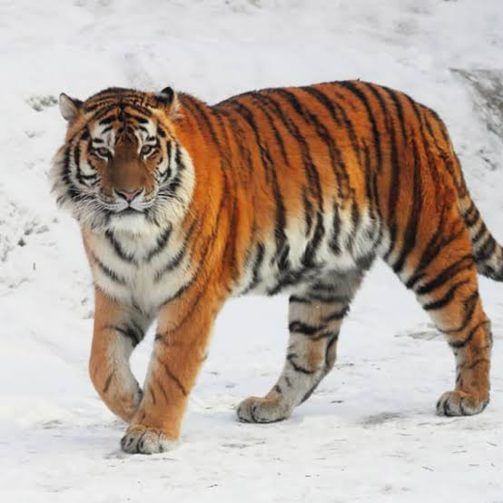
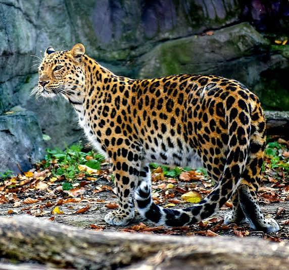
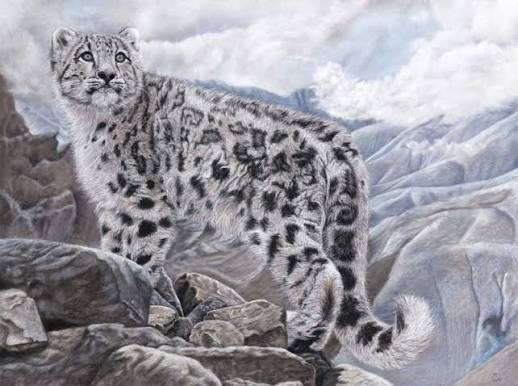
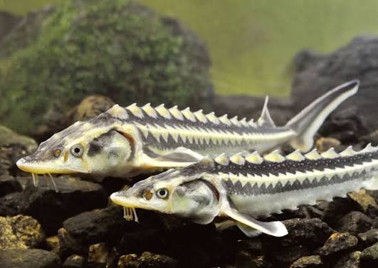
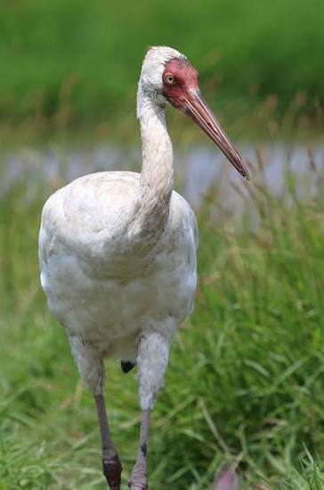
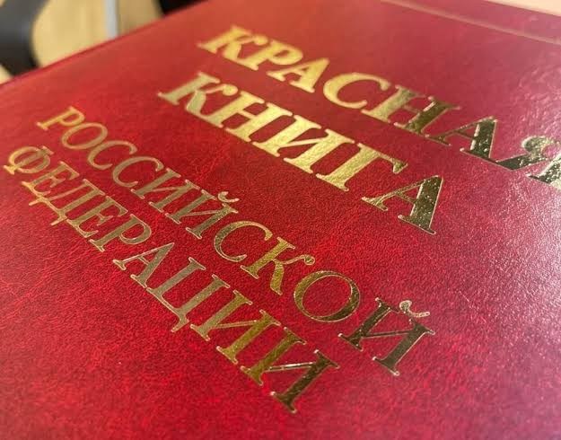
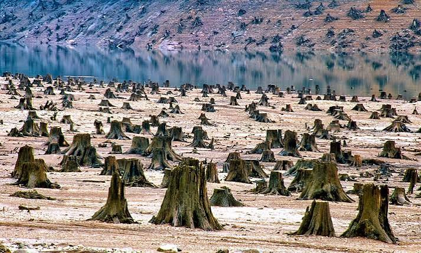
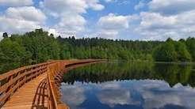

Главная страница
Амурский тигр - подробное описание
Список редких видов (таблица, график, фильтр)
Ниже собраны несколько видов, которые занесены в Красную книгу. Нажмите на картинку амурского тигра, чтобы перейти к странице с подробным описанием.






Красная книга - это официальный список редких и находящихся под угрозой исчезновения животных, растений и грибов. Первый международный вариант списка появился в 1963 году, а Красная книга России ведётся с 1983 года. Попадание вида в книгу означает, что ему нужна особая охрана: запрет на отлов и отстрел, создание заповедников, контроль за численностью.
Каждому виду присваивается категория редкости - от нулевой (вероятно исчезнувшие) до пятой (восстанавливающиеся). Чем меньше номер, тем хуже дела у вида. Например, амурский леопард и стерх относятся к первой категории, а речной бобр - уже к пятой, потому что его численность удалось поднять работой питомников и заповедников.
Списки пересматриваются примерно раз в десять лет. Вид может как попасть в книгу, так и покинуть её - если учёные убедятся, что популяция восстановилась.

Основные причины сокращения численности почти всегда связаны с человеком. Это разрушение мест обитания (вырубка лесов, распашка степей, осушение болот), браконьерство, загрязнение воды и воздуха, а также изменение климата. Отдельная проблема - дороги и линии электропередачи, которые разрывают привычные пути миграции.
Иногда вид страдает не напрямую, а косвенно. Например, если из водоёма исчезает мелкая рыба, то крупным хищным птицам становится нечем кормить птенцов. Поэтому охрана одного вида почти всегда означает охрану целого природного сообщества.

Главный инструмент сохранения редких видов - особо охраняемые природные территории: заповедники, национальные парки, заказники. В России их больше тринадцати тысяч, и в каждом ведутся наблюдения за животными, учёт численности, борьба с браконьерством. Например, Сихотэ-Алинский заповедник в Приморье - ключевое место обитания амурского тигра.
Кроме заповедников работают питомники и центры разведения. Осетров, лошадей Пржевальского, стерхей и многих других животных сначала разводят в неволе, а потом выпускают в природу. Это долгий путь: чтобы новая популяция стала устойчивой, нужны десятилетия.
Помощь не всегда требует больших денег. Достаточно не мусорить в лесу, не покупать изделия из редких животных, сообщать о случаях браконьерства и поддерживать заповедники. Можно участвовать в волонтёрских программах: учёт птиц, уборка территорий, помощь питомникам.
Многие зоопарки и фонды принимают пожертвования на конкретные программы - например, на покупку корма для тигрят-сирот или на ошейники с GPS для отслеживания леопардов. Даже небольшой вклад помогает учёным получать данные, без которых невозможно планировать охрану.
Подробнее об одном из самых известных редких животных - на странице «Амурский тигр». Полный список видов с численностью и годом внесения в Красную книгу смотрите в разделе «Список редких видов».
Направление: Б9124-09.03.04(4) | Создатель: Матрёхин В.О.